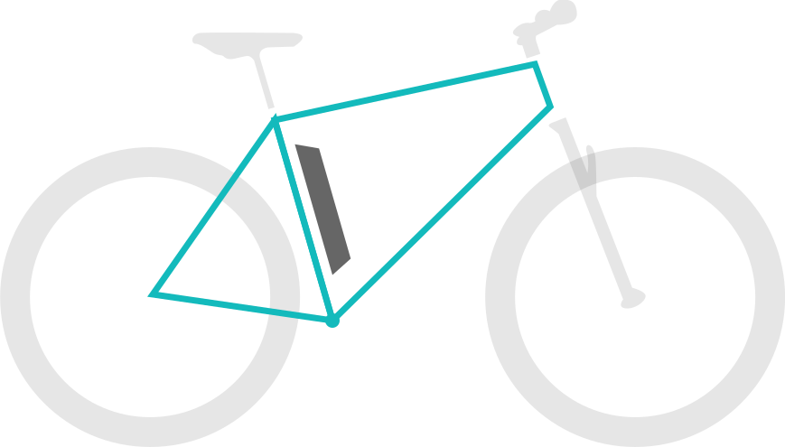

Intube Akku
Unterrohr Akku
Sitzrohr Akku
Gepäckträger Akku
Der Sitzrohr-Akku
Es gibt zwei Positionen, an denen der Akku am Sitzrohr angebracht wird.
✔ Gute Entnahmemöglichkeit
✔ Tiefer Masseschwerpunkt
✘ Verkleinert etwas den Durchstieg bei Einrohr-Rahmen
✘ Optisch schwerer integrierbar